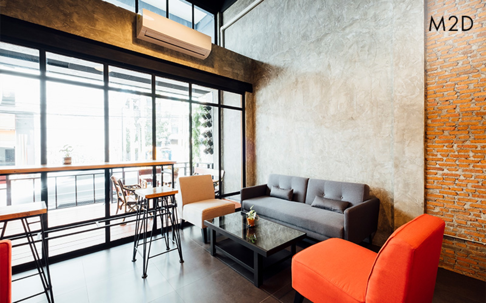
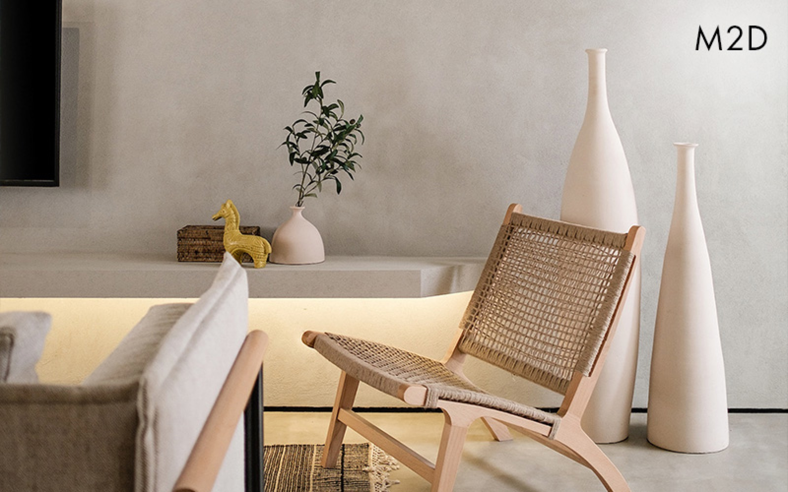
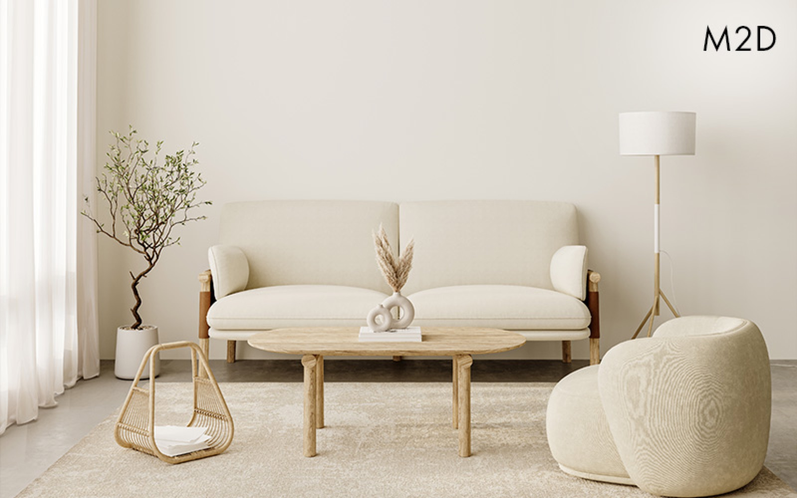
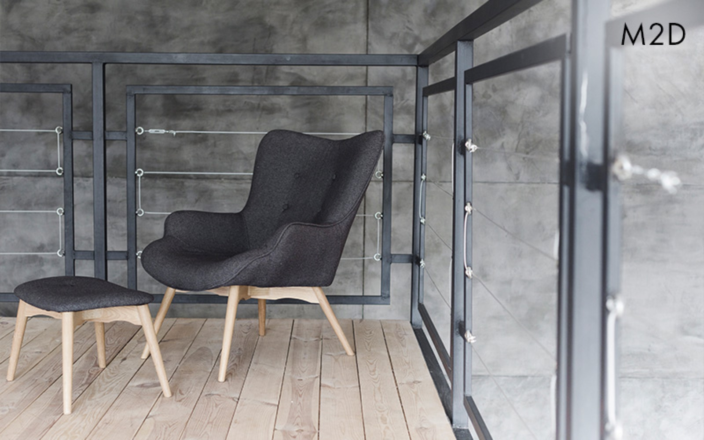
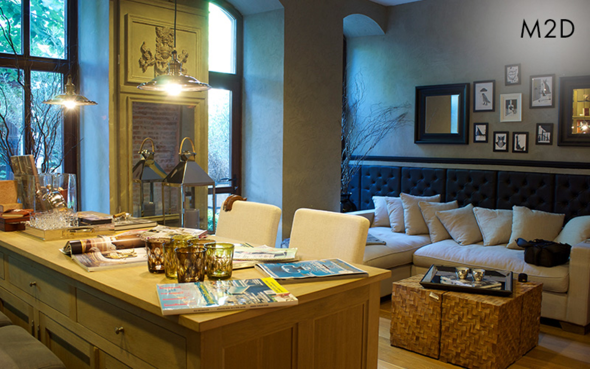

Key Takeaways
Minimalist interior design offers a clean and calming environment, while industrial interior design leans into bold, raw elements.
Each style uses distinct materials—minimalism prefers smooth, pale surfaces, whereas industrial favours unfinished materials like brick and metal.
Choosing the right colour scheme and furniture style will help define the atmosphere of your home.

When it comes to HDB interior design, two popular themes often stand out for modern homeowners—minimalist interior design and industrial interior design. While both value function and simplicity, they could not be more different in how they approach aesthetics, material choices, and the overall feel of a space. If you are unsure on which to choose for your flat, this guide will help you understand their differences and decide which one is better suited to your needs.
1. Aesthetic: Clean Calm vs Raw Character

The core of minimalist interior design is restraint. Its motto is "less is more", prioritising clean lines, clutter-free surfaces, and a calming visual experience. The goal is to strip away the unnecessary, leaving only what is essential. This works well for small flats, where visual simplicity can make a home feel more open and peaceful.
On the other hand, industrial interior design celebrates the raw and the unfinished. It draws inspiration from converted warehouses and old factories, favouring exposed pipes, rough textures, and bold statements. It embraces imperfection and urban character, making a flat feel edgy and full of personality.
2. Materials: Smooth vs Raw

In minimalist interior design, materials are chosen for their simplicity and refinement. Expect to see smooth, clean surfaces like white laminate, pale oak, or light concrete. Textures are subtle and refined, enhancing a calm, spa-like feel.
In contrast, industrial interior design makes a statement with unfinished materials. Some examples include bare cement screed flooring, black metal frames, and weathered wood. Reclaimed materials are common, adding texture and history to the space. This style suits homeowners who want their interiors to feel rugged and grounded.
3. Colour Scheme: Bright Neutrals vs Earthy Darks

The colour scheme plays a big role in setting the tone for each style. Minimalist interior design tends to use light, neutral colours, such as white, beige, and light grey, to create a sense of openness and calm. This palette reflects natural light well and makes small spaces feel bigger.
In contrast, industrial interior design leans into darker, moodier tones. Think charcoal, rust, and black, often paired with brick red or aged brown. These colours work beautifully with the raw materials commonly used in the style and bring a strong, dramatic atmosphere to the room.
4. Furniture Style: Sleek vs Statement

Furniture style is another area where the two designs differ noticeably. Minimalist furniture is functional and discreet, characterised by flat surfaces, hidden storage, and compact proportions. Its ability to make the most of smaller layouts makes it popular in many compact Singaporean homes.
Meanwhile, industrial interior design opts for heavier, more substantial furniture. Items like vintage leather sofas, open shelving with exposed joints, and statement light fixtures give the home a loft-like quality. You may find visible screws, raw edges, or welded joints—all intentional features that define industrial furniture.
Choosing Between the Two

While both styles can be adapted into HDB interior design, the right choice depends on your lifestyle, preferences, and how you want to feel in your home. Minimalism may suit those who value calm, order, and an airy feel. It also requires less maintenance due to fewer items and a simpler layout.
On the other hand, industrial style suits homeowners who love bold design and are not afraid of darker tones and ruggedness. It may require more planning to execute well, especially when working with unfinished materials or fitting exposed pipes into HDB regulations.
Choosing between industrial and minimalist interior design is not just about trends; it is also about figuring out what works best for your daily life. While one offers a soothing, pared-down retreat, the other uses raw textures and bold contrasts to accentuate grunge-like beauty. Understanding your personal taste and living habits will help you make a choice that you will enjoy for years to come.
Here at M2D Design and Consultancy, we understand the importance of tailoring each project to suit your needs, style, and home layout. Whether you are leaning towards the clean elegance of minimalism or the bold appeal of industrial design, our team provides professional interior design services that combine functionality with aesthetic appeal. We also specialise in residential interior design for HDBs, offering customised solutions for both new and resale flats.
For more information about our services, please contact us today.